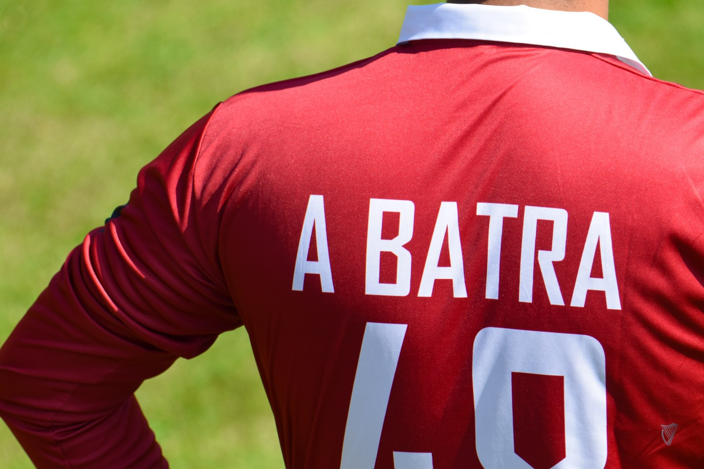
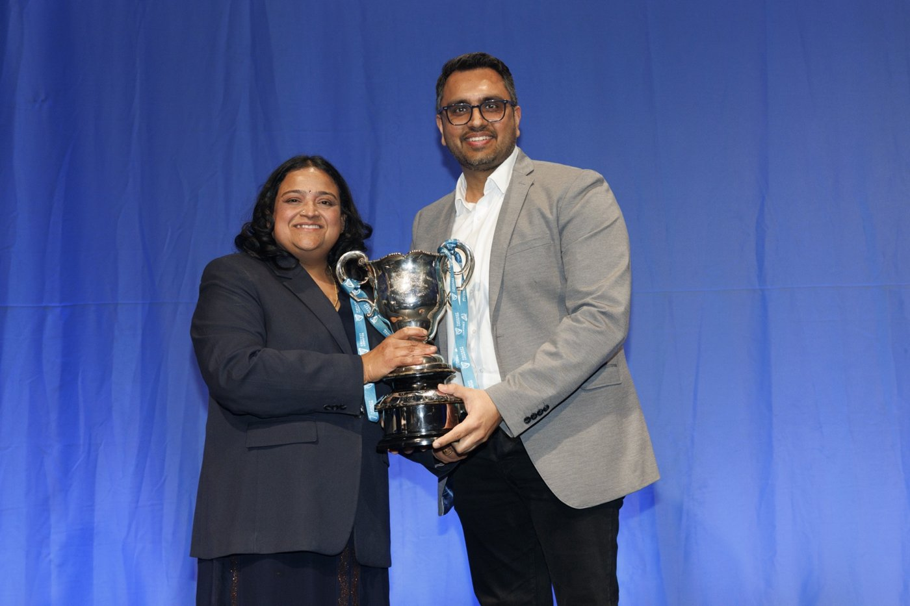

Payments performance
Helping enterprise businesses improve conversion and payment outcomes.
HI, I’M AMAN
I spend a lot of time thinking about payments and technology. I also love a good trip, a day at the cricket, and an idea that makes me want to build something.
This is where I’m bringing those interests together — sharing what I learn, keeping a travel diary, and trying out a few things of my own.
READ, LISTEN & EXPLORE
A few things to spend time with: ideas from work, conversations and, as I add them, notes from the road.
With Dewald Nolte of Entersekt and host Chris Uriarte, discussing authentication, tokenization and payment performance.
Listen to the conversation ↗STRIPE BLOG · AUGUST 2025Research into how authentication and conversion behave across regulated markets, and why the quality of a flow matters.
Read the article ↗STRIPE BLOG · AUGUST 2024What US transaction data reveals about authentication requests, issuer decisions and payment performance.
Read the article ↗WHAT THIS PLACE IS FOR
A notebook, a travel diary, and a small space to make things. All in one place.
Payments, technology, business and the occasional rabbit hole. A place to work through ideas and share useful things I learn.
Explore the journal THE TRAVEL DIARYPlaces to explore, trips to plan and details worth remembering. I want to collect the kind of notes I’d share with a friend.
Find the travel notes THE SHOP · IN THE MAKINGA few T-shirt and cap ideas, including payments jokes that probably need explaining outside our industry.
See the first conceptsI’m just getting started here. The first articles and travel entries are on their way; the shop is at the ideas stage.
PUBLISHED WORK
My Stripe articles, Payments on Fire conversations and a biometric authentication patent, collected in one place.
Explore published work ↗A LITTLE ABOUT ME
At Stripe, I lead Payments Performance Strategy across EMEA. Much of my work comes down to a simple question: how can we make paying for something work better?
That curiosity carries over into technology, new products and the way businesses work. I enjoy turning complicated topics into something useful — and hearing how other people see them.
I’m making this website a home for those conversations, alongside travel, cricket and some creative experiments. Somewhere I can keep adding things that interest me.
My work background on LinkedIn ↗CRICKET & COMMUNITY
Match days, time with the team and moments worth celebrating.


ALWAYS UP FOR A GOOD CONVERSATION
I enjoy conversations about payments, authentication and where commerce is heading. Speaking and being part of the wider payments community are ways to share what I’m learning, and keep learning myself.
Stripe Sessions · MRC European Advisory Board
Let’s connect ↗Helping enterprise businesses improve conversion and payment outcomes.
Understanding the balance between trust, security and a smooth customer experience.
Making sense of industry changes and what they mean in practice.
Turning payments challenges into useful product decisions.
SAY HELLO